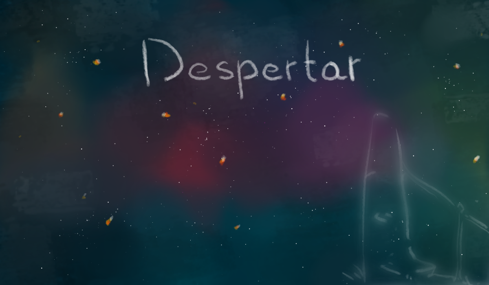

<div class="start-container" (mouseenter)="playMainAudio()" (mouseleave)="stopMainAudio()">
  
  <div fxLayout="row" fxLayoutAlign="center center">
    <button mat-stroked-button (click)="iniciar()" class="boton-start">iniciar</button>
    <button mat-stroked-button class="boton-start" (click)="creditos()">creditos</button>
  </div>
</div>
